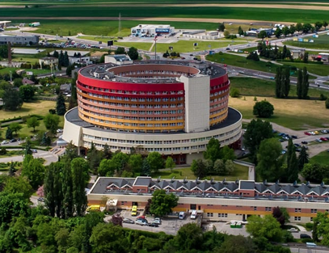
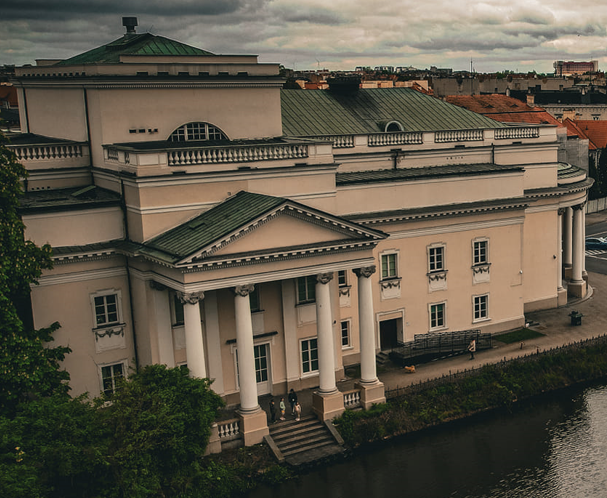
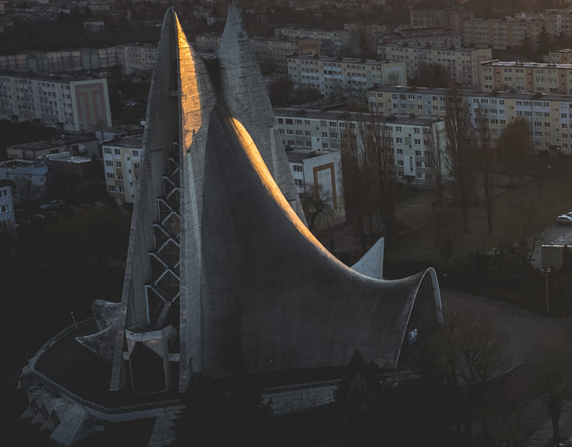

Witaj!
Zapraszam Cię serdecznie do odkrywania uroków Kalisza, fascynującego miasta pełnego historii i ciekawych miejsc.
Na tej stronie będziesz mógł/a zapoznać się z trzema wyjątkowymi budynkami, które są prawdziwymi skarbami tego regionu.
Poniżej znajduje się krótki opis wybranych budynków Kalisza, które zasługują na szczególną uwagę.
Każdemu z tych budynków poświęcimy osobną sekcję, abyś mógł/a lepiej poznać ich historię, architekturę i znaczenie dla miasta.
|  |
Wojewódzki Szpital Zespolony im. Ludwika Perzyny w Kaliszu w Kaliszu (Szpital Okrąglak) |
|  |
Teatr im. Wojciecha Bogusławskiego w Kaliszu: |
|  |
Kościół Miłosierdzia Bożego: |
Pragnę, abyś mógł/a doświadczyć Kalisza w pełni, odkrywając tajemnice tych trzech niezwykłych budynków. Zachęcam do przeglądania strony, zgłębiania informacji i czerpania radości z poznawania tego wyjątkowego miasta.
Miłej podróży przez Kalisz!
,
Natalia Juszczak
Wojewódzki Szpital Zespolony im. Ludwika Perzyny w Kaliszu (Okrąglak)
Historia
Wojewódzki Szpital Zespolony im. Ludwika Perzyny w Kaliszu jest wielospecjalistycznym szpitalem, który został utworzony w 1985 roku. W 2006 roku dołączono do niego Wojewódzki Szpital Matki i Dziecka im. Przemysława II. Szpital znajduje się przy ulicy Poznańskiej 79 w Kaliszu.
Historia szpitala sięga lat 50. XX wieku, kiedy to Oddział Chorób Płucnych Szpitala Miejskiego im. Przemysława II został przekształcony w Państwowy Szpital Przeciwgruźliczy im. dra Bronisława Koszutskiego w Wolicy. Budynek szpitala przy ulicy Poznańskiej 79 został wzniesiony w latach 1973-1989 według projektu Henryka Marcinkowskiego i Piotra Namysła.
Znaczenie dla miasta
Wojewódzki Szpital Zespolony im. Ludwika Perzyny w Kaliszu to placówka, która leczy rocznie około 37 tysięcy pacjentów. Współpracuje również z Wydziałem Medycznym Akademii Kaliskiej im. Prezydenta Stanisława Wojciechowskiego w zakresie praktyk studenckich i pozyskiwania nowej kadry medycznej.
W 2015 roku szpital otrzymał wsparcie finansowe Urzędu Marszałkowskiego Województwa Wielkopolskiego w wysokości ponad 11 milionów złotych, co umożliwiło zakup innowacyjnej aparatury medycznej, w tym neuronawigacji do skomplikowanych operacji mózgu. W 2016 roku otwarto Oddział Onkologii Klinicznej, który jest połączony bezpośrednio z budynkiem Ośrodka Radioterapii.
Wojewódzki Szpital Zespolony im. Ludwika Perzyny w Kaliszu posiada wiele oddziałów specjalistycznych, takich jak Chorób Wewnętrznych, Chirurgii Ogólnej, Anestezjologii i Intensywnej Terapii, Neurologii, Urologii, Kardiologii, Okulistyki, Rehabilitacji, Psychiatrii, Onkologii i wiele innych. Jest to ważna placówka medyczna dla mieszka
Architektura
"Okrąglak" w Kaliszu, znany również jako Szpital Wojewódzki Zespolony im. Ludwika Perzyny, to wybitny przykład architektury modernistycznej z okresu Polski Ludowej. Zbudowany w latach 1973-1989, ten imponujący budynek o 12 piętrach i okrągłym kształcie wyróżnia się na tle okolicznej zabudowy. Jego konstrukcja żelbetonowa oraz stylistyka nawiązująca do tendencji architektonicznych lat 70. stanowiły odważny krok w tamtych czasach. Choć budynek przeszedł później modernizację, nadal jest uznawany za wyjątkowe dzieło architektury tego okresu, będące symbolem Kalisza i dumą mieszkańców.
Teatr im. Wojciecha Bogusławskiego w Kaliszu (Teatr nad Prosną)
Historia
Teatr im. Wojciecha Bogusławskiego w Kaliszu jest czwartym teatrem, który powstał na przestrzeni ponad 200 lat historii kaliskiej sceny teatralnej. Jego neoklasycystyczny gmach, zbudowany w latach 30. XX wieku, jest głównym akcentem architektonicznym placu Bogusławskiego. Został on wybudowany w miejscu dwóch poprzednich obiektów i kontynuuje ducha poprzednich teatrów. Teatr otrzymał imię Wojciecha Bogusławskiego, który był jedną z kluczowych postaci w historii kaliskiej sceny teatralnej
Historia Teatru Miejskiego w Kaliszu sięga 1800 roku, a jego tradycje mają znaczenie ogólnopolskie w propagowaniu kultury teatralnej. Na gmachu teatru umieszczone są dwie tablice upamiętniające występy aktorów z Wojciechem Bogusławskim na czele oraz hołd dla wszystkich aktorów, którzy występowali na kaliskiej scenie. Teatr w Kaliszu jest instytucją kultury samorządu województwa wielkopolskiego. Obiekt jest dostępny dla zwiedzających z zewnątrz, a wszelkie dodatkowe informacje można uzyskać poprzez kontakt telefoniczny lub adres e-mail dostępne na stronie internetowej teatru
Znaczenie dla miasta
Teatr im. Wojciecha Bogusławskiego jest dumnym symbolem Kalisza i odgrywa kluczową rolę w kształtowaniu tożsamości kulturalnej miasta. Jego drugie miejsce w rankingu najstarszych teatrów w Polsce pod względem czasu funkcjonowania podkreśla jego historyczne znaczenie. Choć budynek teatru został zburzony w czasie I wojny światowej, to duch teatru kontynuuje swoje istnienie i materializuje się w obecnym gmachu, przyciągając publiczność swoją wysoką jakością artystyczną i związanymi z nim emocjami. Kaliski teatr jest nie tylko miejscem sztuki, ale także symbolem kontynuacji teatralnej tradycji i duchowej istoty teatru.
Teatr im. Wojciecha Bogusławskiego to nie tylko miejsce spektakli i wydarzeń artystycznych, ale również symbol historii kaliskiej sceny teatralnej. Jego tradycje, sięgające ponad 200 lat wstecz, stanowią ważną część dziedzictwa kulturowego miasta. Teatr nie tylko zapewnia mieszkańcom i odwiedzającym unikalne doświadczenia artystyczne, ale również stanowi ośrodek kulturalny o znaczeniu ogólnopolskim. Chociaż budynek teatru został zburzony, to duch teatru nadal trwa, przyciągając publiczność swoją wysoką jakością artystyczną i związanymi z nim emocjami. Teatr im. Wojciecha Bogusławskiego jest nie tylko miejscem sztuki, ale także symbolem kontynuacji teatralnej tradycji i duchowej istoty teatru."
Architektura
Budynek teatru ma charakterystyczny wygląd, z prostokątnym rzutem i dwoma ryzalitami bocznymi przyscenicznymi. Jeden z ryzalitów, od strony rzeki Prosny, jest poprzedzony czterokolumnowym portykiem, a drugi jest dekorowany pilastrami. Od frontu budynek zdobi półkolisty ośmiokolumnowy portyk joński. Elewacje są otynkowane i ozdobione klasycystycznym detalami architektoniczno-ornamentalnymi, gzymsami i balustradami balkonowymi. Wnętrze teatru jest symetryczne, z widownią o układzie amfiteatralnym, parami lóż i balkonami skomunikowanymi z westybulem. Scena teatralna ma charakter pudełkowy, a bryła obiektu jest urozmaicona trzykondygnacyjną częścią środkową nad sceną. Dachy budynku są dwuspadowe i wielopołaciowe, kryte blachą.
Kościół Miłosierdzia Bożego
Historia
Historia tego niezwykłego kościoła w Kaliszu sięga czasów powojennych. W latach tuż po II wojnie światowej w Polsce nie powstawało wiele nowych świątyń, a priorytetem było odbudowanie zrujnowanych kościołów. Dopiero w 1956 roku - 3 lata po śmierci Stalina - w wyniku odwilży politycznej która wtedy nastąpiła, w Kaliszu ogłoszono konkurs architektoniczny na nowe sanktuarium. Zwycięski projekt dwóch młodych architektów, Andrzeja Fajansa i Jerzego Kuźmienki, zaskoczył odważnym i nowatorskim podejściem do formy i geometrii. Budowę rozpoczęto w 1977 roku, mimo przeciwności, takich jak cofnięcie pozwolenia na budowę czy trudne czasy stanu wojennego. Po wielu latach pracy i poświęcenia parafian, kościół został ukończony w latach 90.
Historia Teatru Miejskiego w Kaliszu sięga 1800 roku, a jego tradycje mają znaczenie ogólnopolskie w propagowaniu kultury teatralnej. Na gmachu teatru umieszczone są dwie tablice upamiętniające występy aktorów z Wojciechem Bogusławskim na czele oraz hołd dla wszystkich aktorów, którzy występowali na kaliskiej scenie. Teatr w Kaliszu jest instytucją kultury samorządu województwa wielkopolskiego. Obiekt jest dostępny dla zwiedzających z zewnątrz, a wszelkie dodatkowe informacje można uzyskać poprzez kontakt telefoniczny lub adres e-mail dostępne na stronie internetowej teatru
Znaczenie dla miasta
Parafia i architekci niezłomnie pracowali przez wiele lat, poświęcając się realizacji swojego marzenia. W atmosferze represji politycznych i ograniczeń stalinowskich, duchowy zapał parafian był niezwykle ważny dla kontynuacji budowy. Dzięki wytrwałości i determinacji, kościół w Kaliszu został wreszcie ukończony w latach 90., stanowiąc nie tylko miejsce kultu religijnego, ale także symbol wolności i niezłomności w obliczu trudnych czasów komunizmu.
Sanktuarium Miłosierdzia Bożego w Kaliszu ma istotne znaczenie w kulturze i architekturze. Jest to pierwsza na świecie realizacja architektoniczna wykorzystująca jednopowłokową powierzchnię paraboliczną w tak dużej skali. Kościół ten stanowi wyraz odwagi i nowatorskiego podejścia polskiego Kościoła katolickiego do współczesności. Jego unikalna forma i nietuzinkowy design porównywane mogą być do innych znanych budowli, takich jak Opera w Sydney czy pawilon Philipsa na wystawie światowej w Brukseli. Sanktuarium Miłosierdzia Bożego stanowi nie tylko świątynię religijną, ale także wartościowe dzieło sztuki i architektury o nieprzemijającym pięknie.
Architektura
Architektura tego kościoła jest niezwykła i inna niż wszystkie. Jego bryła w kształcie paraboloidy hiperbolicznej wznosi się na wysokość 45 metrów i składa się z jednej cienkościennej powłoki z białego cementu o grubości zaledwie kilku centymetrów. Konstrukcję zaprojektował Wacław Zalewski, światowy pionier technik linowo-prętowych. Wykorzystanie powłoki parabolicznej pozwoliło na użycie prostych desek jako szalunków podczas budowy. Choć wnętrza kościoła nie dorównują architekturze pod względem estetyki, to sama forma budowli i przestrzeń wnętrza, wzbogacone witrażami i żelaznymi drzwiami, tworzą niepowtarzalne doświadczenie dla odwiedzających